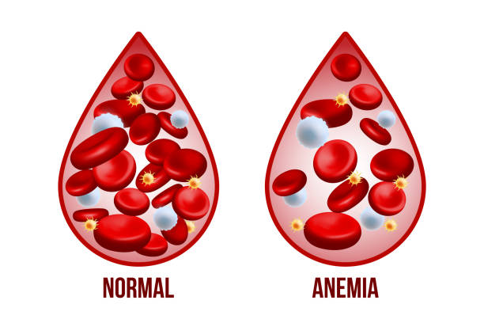

Anemia
Descripción

Es una afección por la cual el cuerpo no tiene suficientes glóbulos rojos sanos. Los glóbulos rojos suministran oxígeno a los tejidos corporales.
Síntomas
- Cansancio
- Falta de aire
- Piel pálida o amarillenta
- Latidos cardíacos irregulares
Tratamiento
Suplementos de hierro, dieta balanceada y transfusiones.